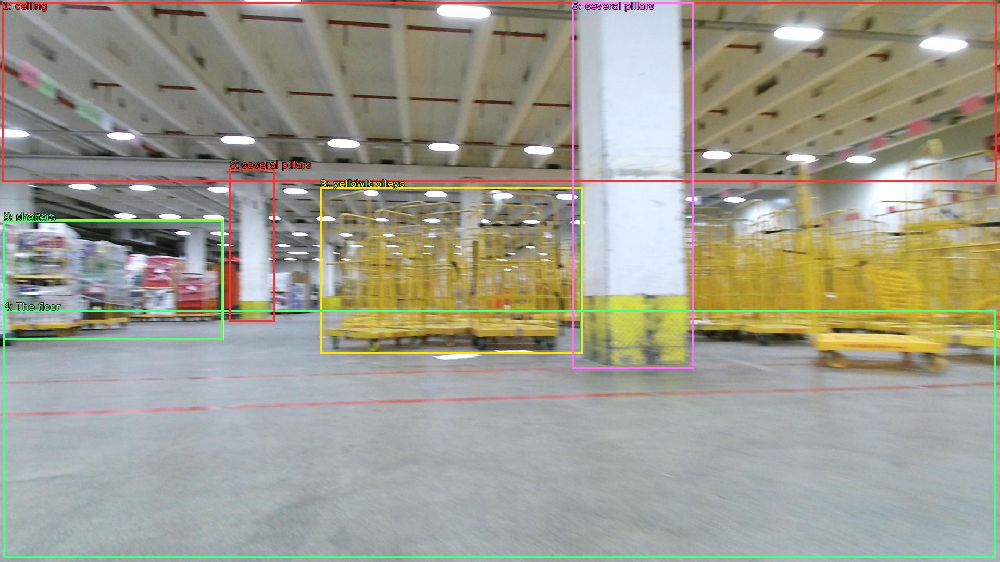

The image shows the interior of a large warehouse with a high ceiling and multiple rows of yellow trolleys. The floor is made of concrete and there are several pillars in the center of the room. On the left side of the image, there are shelves with various items for sale, and on the right side, there is a row of shelves with more items. The image is taken from a low angle, looking up at the ceiling. The overall atmosphere of the warehouse appears to be clean and well-maintained.

Original · Caption raw · Grounding raw · Koordinate
Številke so lokalni ID regije. Dolge slikovne oznake so skrajšane; spodaj so celotne fraze. Napovedane regije se lahko prekrivajo ali opisujejo skupine.
| ID | Celotna fraza | bbox xyxy |
|---|---|---|
| 1 | ceiling | [4.799999713897705, 3.7800002098083496, 1913.2799072265625, 349.3800048828125] |
| 2 | multiple rows | [615.3599853515625, 359.1000061035156, 1116.47998046875, 679.8600463867188] |
| 3 | yellow trolleys | [615.3599853515625, 359.1000061035156, 1118.4000244140625, 679.8600463867188] |
| 4 | The floor | [6.71999979019165, 595.6199951171875, 1911.3599853515625, 1071.9000244140625] |
| 5 | several pillars | [1099.199951171875, 4.860000133514404, 1331.52001953125, 709.02001953125] |
| 6 | several pillars | [440.6399841308594, 323.46002197265625, 527.0399780273438, 618.300048828125] |
| 7 | shelves | [6.71999979019165, 421.7400207519531, 427.1999816894531, 652.8600463867188] |
| 8 | a row | [6.71999979019165, 421.7400207519531, 429.1199951171875, 653.9400024414062] |
| 9 | shelters | [6.71999979019165, 423.9000244140625, 427.1999816894531, 652.8600463867188] |